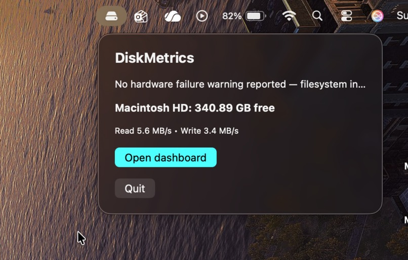
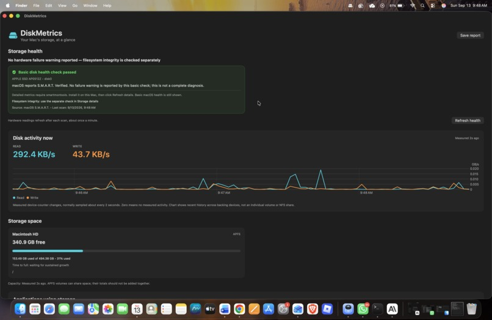
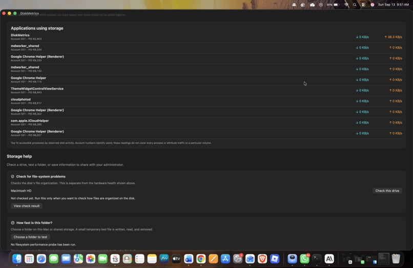
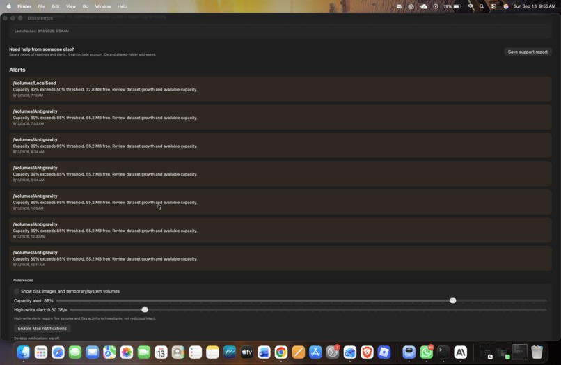

004 / DiskMetrics
A native macOS menu bar app for real-time storage health, I/O activity, and per-process disk monitoring — built at the same hackathon as Campfire, for the TCL File System Tools Challenge.
Stack
Screens

One-Click Storage Status
A lightweight menu bar popup surfacing free space and current read/write speed without opening the full dashboard.

Storage Health at a Glance
The core dashboard: S.M.A.R.T.-based disk health status, a live read/write activity graph, and capacity with growth-based "time to full" projection.

Applications Using Storage
Real-time breakdown of the top processes by disk read/write activity, plus built-in filesystem-integrity and folder-speed diagnostic tools.

Configurable Capacity & Write Alerts
Live alert log flagging volumes exceeding capacity thresholds, with adjustable sensitivity and a "save support report" option.